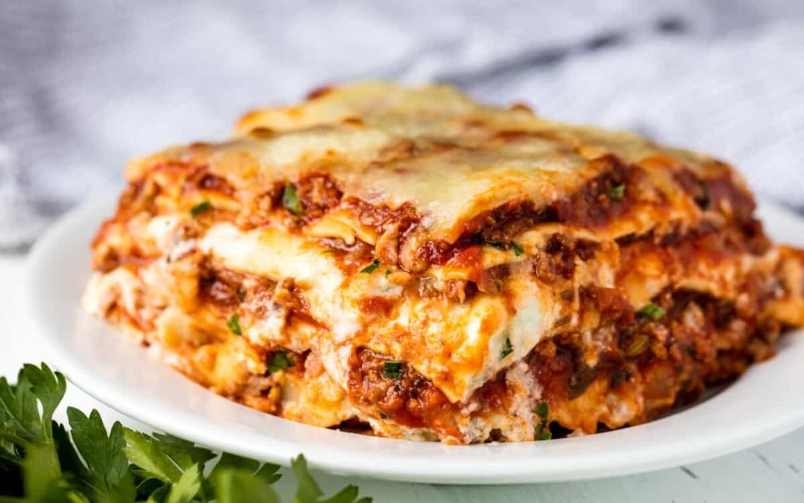

Lasagna

Homemade lasagna is the best. Each layer of this lasagna is thoughtfully composed to balance flavors and textures. The sweet Italian sausage and lean ground beef offer a rich, meaty base, complemented by the subtle sharpness of white onion and the warmth of minced garlic.
Ingredients
- 1 pound sweet Italian sausage
- 1 pound lean ground beef
- 1 large white onion (diced)
- 5 cloves garlic (minced)
- 1 (28 ounce) can crushed tomatoes
Steps
- Cooling: Allow your cooked lasagna to cool to room temperature. Freezing it while hot can lead to condensation, resulting in a soggy texture upon reheating.
- Portioning: Consider cutting the lasagna into individual portions. This makes it easier to thaw and reheat only what you need, reducing waste.
- Wrapping: Wrap each portion tightly with plastic wrap, ensuring that it’s sealed well to prevent freezer burn. Then, wrap it again with aluminum foil for added protection.
- Labeling: Label each portion with the date. Lasagna can be stored in the freezer for up to 3 months.